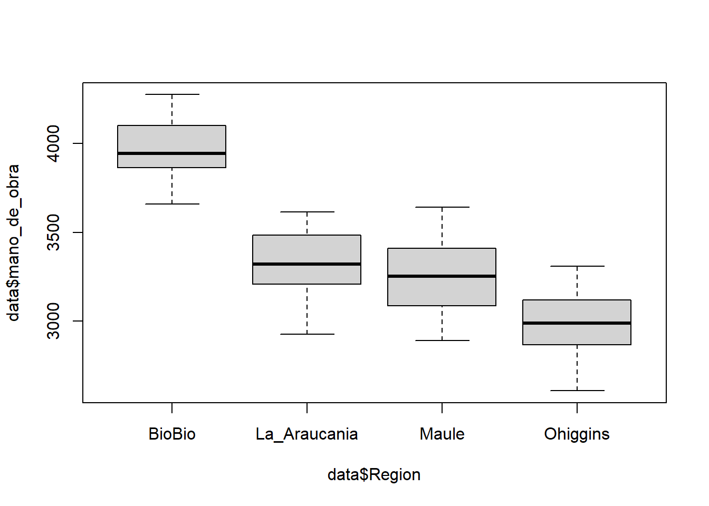

Capitulo 6 Estadística inferencial: Pruebas estadísticas
La Estadística inferencial es la rama de la Estadística que comprende los métodos empleados para deducir propiedades (hacer inferencias) de una población, a partir de una pequeña parte de la misma (muestra). También permite comparar muestras de diferentes poblaciones. Generalmente comprende las pruebas de estimación (puntual o por intervalos de confianza), y las pruebas de hipótesis.
En estadística inferencial existen dos grandes familias de pruebas estadísticas, las pruebas paramétricas y las no paramétricas.
6.1 Pruebas paramétricas.
Asumen que las muestras provienen de una población con una distribución conocida (generalmente distribución normal).
Para utilizar estas pruebas estadísticas, se deben cumplir algunas condiciones o supuestos:
a. Normalidad
Las pruebas paramétricas suponen que los datos se extraen de poblaciones que siguen una distribución normal. Es decir, los datos se distribuyen normalmente una vez que se tienen en cuenta los efectos de las variables en el modelo. En la práctica, esto significa que los residuos del análisis deberían distribuirse normalmente.
b. Homogeneidad (homocedasticdad) de varianzas
Las pruebas paramétricas consideran que la varianza es constante (no varía) en los diferentes grupos (niveles) de una variable (factor). Homoscedasticidad significa “tener la misma dispersión”. Lo contrario es la heterocedasticidad (“dispersión diferente”). Datos atípicos modifican la varianza.
c. Independencia
Los datos deben ser independientes unos de otros.
6.2 Pruebas no-paramétricas
Las pruebas no paramétricas no asumen una distribución a priori y generalmente utilizan rangos en las estimaciones. Estas pruebas tienden a ser menos potentes que la prueba paramétrica correspondiente cuando se cumple el supuesto de normalidad. Por lo tanto, es menos probable que usted rechace la hipótesis nula cuando sea falsa si los datos provienen de la distribución normal.
En el presente laboratorio evaluaremos si las variables incluidas en nuestra base de datos cumplen con los supuestos de normalidad y homocedasticidad. Ambos supuestos pueden ser evaluados mediante una inspección visual o mediante un contraste de hipótesis (pruebas estadísticas).
6.3 Normalidad
6.3.1 Método visual: histograma de frecuencia
Graficar un histograma de la variable de interés nos dará una idea de la forma de la distribución que siguen nuestros datos. Recordemos que la distribución normal alcanza su punto máximo en el medio y es simétrica respecto del media. No es necesario que los datos se distribuyan de manera perfectamente normal para que las pruebas sean confiables.
Evaluemos visualmente si los datos del número de personas contratadas para realizar las labores asociadas a la temporada de cosecha en cada sitio de muestreo se distribuyen de forma normal:
A simple vista podemos establecer que los datos del número de personas contratadas para realizar las labores asociadas a la temporada de cosecha en cada sitio de muestreo siguen una distribución normal. Este tipo de aproximación es útil como herramienta exploratoria. Sin embargo, el análisis visual es subjetivo porque dependemos de la interpretación personal de los gráficos. Una alternativa objetiva es el uso de análisis estadísticos basados en contraste de hipótesis.
6.3.2 Pruebas estadísticas: prueba de Shapiro-Wilk
En estadística, la prueba de Shapiro–Wilk permite para contrastar la normalidad de un conjunto de datos. Se pondrán a prueba las siguientes hipótesis:
Hipótesis nula (H~0) = Los datos provienen de una distribución normal
Hipótesis alternativa (H~a) = Los datos NO provienen de una distribución normal
Recuerden que el p-value asociado al análisis nos permitirá rechazar (\(p < 0.05\)) o no (\(p > 0.05\)) nuestra hipótesis nula o de igualdad. Entonces, si el valor de probabilidad es mayor a 0.05, no rechazamos la hipótesis nula y asumimos que los datos provienen de una distribución normal.
##
## Shapiro-Wilk normality test
##
## data: data$mano_de_obra
## W = 0.96107, p-value = 0.001544El valor de probabilidad asociado a nuestro análisis (0.0015442. es decir \(p<0.05\)) sugiere que los datos del número de personas contratadas para realizar las labores asociadas a la temporada de cosecha en cada sitio de muestreo No siguen una distribución normal. ¿qué podemos hacer? Bueno, existen dos opciones:
Podemos transformar nuestra variable y volver a aplicar los métodos para comprobar normalidad. Las transformaciones más comunes incluyen aplicar logaritmo o estimar la raíz cuadrada de la variable.
Utilizar pruebas no-paramétricas.
6.4 Homocedasticidad
6.4.1 Método visual: boxplot
Visualizar un gráfico de cajas de la variable de interés nos dará una idea de la dispersión de los datos en torno a una medida de tendencia central. Para ello podemos considerar el tamaño de los bigotes de nuestro gráfico de cajas.
Evaluemos visualmente si los datos del número de personas contratadas para realizar las labores asociadas a la temporada de cosecha presentan varianzas similares dependiendo de la región en las cual trabajan:

Nuestro análisis visual muestra que los datos del número de personas contratadas para realizar las labores según la región presentan niveles similares de dispersión entorno a la mediana para todas las regiones evaluadas. Sin embargo, pequeñas diferencias se observan en las regiones de O’Higgins y La Araucanía.
Otra opción es comparar directamente los valores de las varianza entre los grupos de interés. Para ello utilizaremos la función tapply:
## BioBio La_Araucania Maule Ohiggins
## 29011.08 34126.69 38013.66 37485.26Los valores muestran que la varianza es relativamente similar solamente en tres de las cuatro regiones comparadas. Para evaluar de mejor forma la posible igualdad de varianzas entre las cuatro regiones, podemos realizar una prueba estadística basada en contraste de hipótesis.
6.4.2 Pruebas estadísticas: Prueba de Levene
En estadística, la prueba de Levene permite evaluar la igualdad de las varianzas (homocedasticidad) para una variable calculada para dos o más grupos. Se pondrán a prueba las siguientes hipótesis:
Hipótesis nula (H0) = Las varianzas poblacionales de los grupos son iguales.
Hipótesis alternativa (HA) = Las varianzas poblacionales de los grupos NO son iguales.
Recuerden que el p-value asociado al análisis nos permitirá rechazar (\(p < 0.05\)) o no (\(p > 0.05\)) nuestra hipótesis nula. Si el p-value resultante de la prueba de Levene es inferior a 0.05 es poco probable que las diferencias obtenidas en las variaciones de la muestra se hayan producido sobre la base de un muestreo aleatorio de una población con varianzas iguales. Por lo tanto, la hipótesis nula de igualdad de varianzas se rechaza y se concluye que hay una diferencia entre las variaciones en la población.
La función leveneTest es parte de la librería car. Es por ello que necesitamos instalar y cargar esta librería antes de hacer el análisis.
## Loading required package: carData## Levene's Test for Homogeneity of Variance (center = median)
## Df F value Pr(>F)
## group 3 0.3247 0.8075
## 116El valor de probabilidad (\(p > 0.05\)) asociado a nuestro análisis sugiere que las varianzas del número de personas contratadas para realizar las labores son estadísticamente similares para las muestras de la cuatro regiones analizadas.
Dado que la variable analizada no cumple con el supuesto de normalidad, no podemos aplicar métodos estadísticos paramétricos sobre ella.